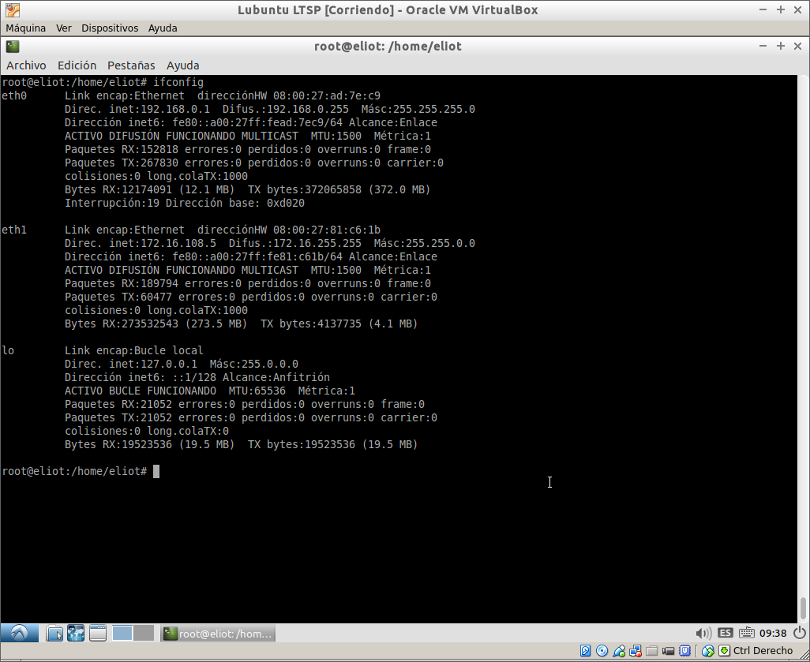
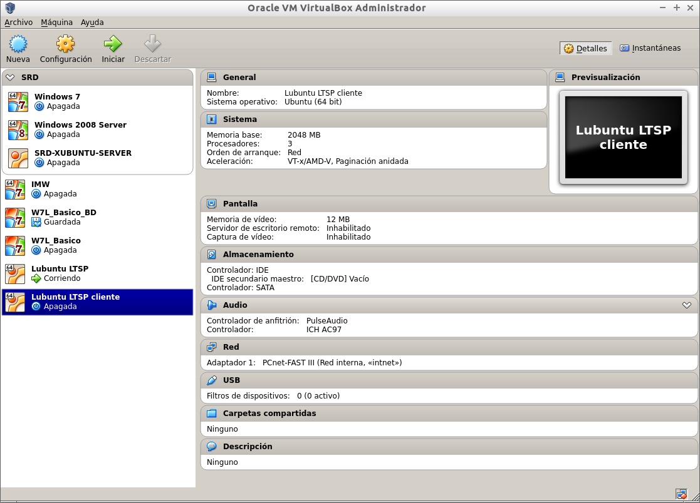
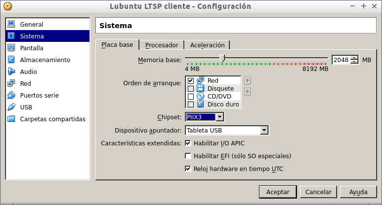
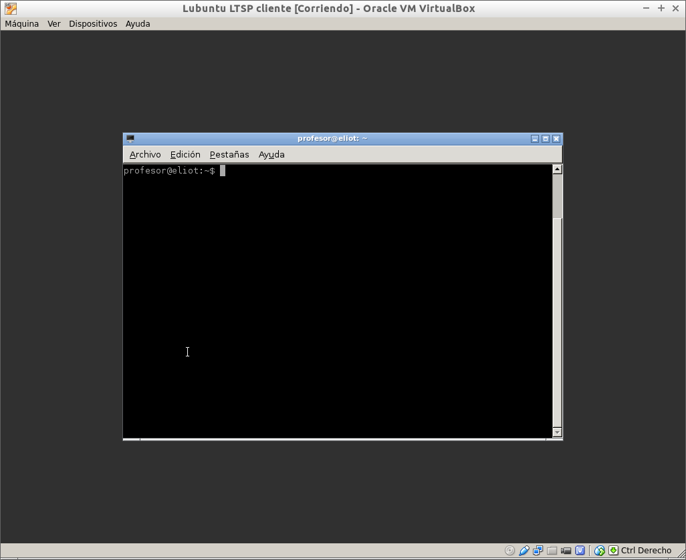

- Módulo: Sistemas Operativos
- Título del trabajo Instalación y configuración de LTSP
- Componentes del grupo: Eliot Farrais García
- Curso Académico: 2014/2015
- Fecha de entrega: 23 de septiembre de 2014
Instalamos y buscamos los siguientes paquetes desde Synaptic:
apt-get install ltsp-server-standalone
Nota: Openssh viene ya instalado
Configuramos las tarjetas de red, una estatica para la red internet(eth1) y otra para la red interna donde va nuestro cliente(eth0)
Configuramos las tarjetas de red interna en virtual box con el adaptador de red PCnet-FAST III para servidor y cliente
Como orden de arranque, ponemos red como la primera en el cliente
Como vemos se nos ejecuta el cliente ligero en el cliente, sin problemas
